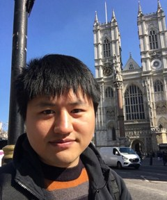

Fan Shen
shenfan@mail.sysu.edu.cnGitHubORCID
I work on high-fidelity modeling, structural optimization and system dynamics, and have applied these methods to engineering and interdisciplinary problems for more than ten years. I trained in aerospace at Harbin Institute of Technology, worked with Rolls-Royce at Queen's University Belfast on whole-engine structural design, and am now at Sun Yat-sen University.
The methods have stayed the same while the domain has moved, from aerospace structures in 2012 to 2018, to knowledge organization across disciplines in 2023, and to human movement and human-centered systems since 2025.

Research
- Life Matters. An open framework for simulating and optimizing individual-scale health and behavioral decisions, coupling mechanisms from separate published studies into one dynamical model.
- Structural Topology Optimisation. Topology optimisation of gas turbine engine and nacelle components with Rolls-Royce partners.
- Solar Sail Deformation and Adjustment. Deformation modeling and trajectory adjustment for flexible solar sail structures.
Publications
-
{{PUBS}}
Side projects
- Tasks Flowchart. An Obsidian plugin that draws task dependencies as a flowchart, for projects where the order of work matters.
- Smart Fold. An Obsidian plugin that folds a long note into its outline with one click.
Experience
| 2022 to now | Vice Researcher, Sun Yat-sen University, Guangzhou |
| 2018 to 2021 | Research Fellow, Queen's University Belfast, UK. Whole-engine structural design with Rolls-Royce. |
| 2010 to 2011 | CFD Engineer, Lantian Environmental Engineering Co., China |
Education
| 2012 to 2017 | Ph.D., Aerospace Science and Technology, Harbin Institute of Technology |
| 2007 to 2009 | M.Eng., Solid Mechanics, Harbin Institute of Technology |
| 2003 to 2007 | B.Eng., Engineering Mechanics, Harbin Institute of Technology |